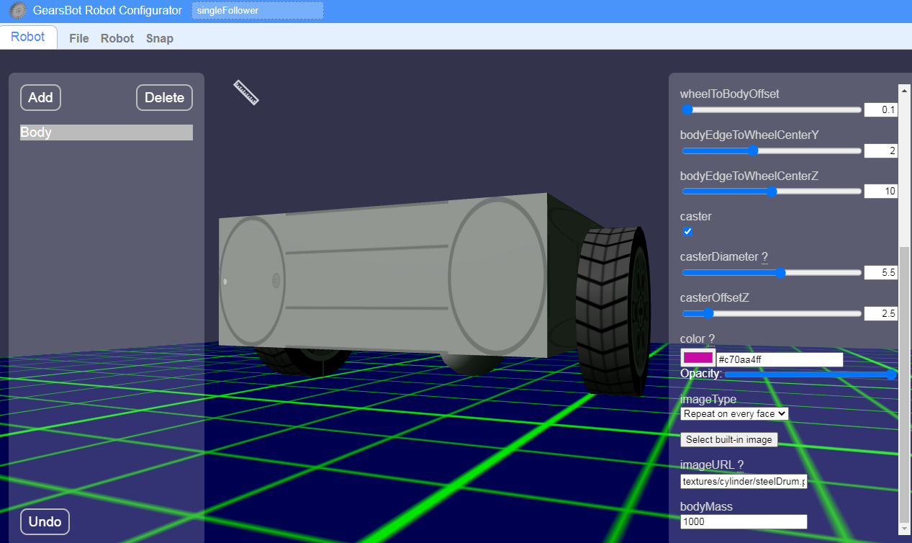

Robot Configurator
We can do a lot more with the Worlds and Robots we already have in GearsBot.
But, now we want to try to make cool-looking robots for a Robotic Dance Show!
We can modify the basic GearsBot in the Robot Configurator.

Some Basics:
-
The left pane contains all the different mechanical parts of your Robot:
-
Simple shapes
- Sensors
-
Actuators
-
The right pane is for properties for whichever robot part is selected
-
Height
- Width
- Depth
- Relative Position
- Rotation
- Color/Skin
-
More...
-
You can use the mouse to rotate, zoom, pan the configured robot in the middle. You will need to get good at that to:
-
Place things relative to other things
- View your robot from different angles
Let's Go Real Simple
First let's strip our basic robot of all its sensors and magnet actuator...
Under Body in the left pane, take turns clicking on all the extra parts associated with the robot, and delete them!

You should be left with just a Body!
Feel free to customize the base of your robot:
- Height, Weidth, Length
- Size of wheels
- Size and offset of Caster (ball in back)
- Color or Skin
For instance:
